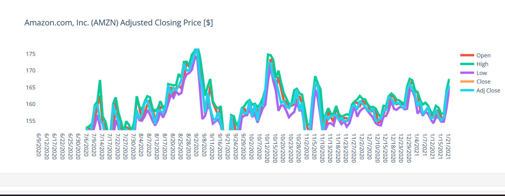
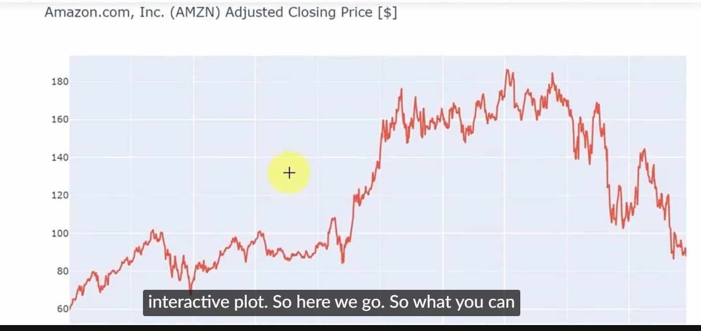

Selected projects in financial analytics, Python visualization, machine learning, accounting systems, and business process improvement.
The project involved data exploration, feature analysis, stratified sampling, data preprocessing, model training, hyperparameter tuning, performance evaluation, and comparative analysis across multiple machine learning algorithms.
Models evaluated included Decision Trees, k-Nearest Neighbors, Support Vector Machines, Scikit-learn Neural Networks, and PyTorch Neural Networks.
Performance was measured using Accuracy, Macro-F1 Score, Balanced Accuracy, learning curves, confusion matrices, and computational efficiency metrics.
RBF Support Vector Machine
80.15%
0.6943
Skills demonstrated: Python, pandas, NumPy, scikit-learn, PyTorch, supervised machine learning, model evaluation, data preprocessing, and machine learning reporting.
View Full Project Report (PDF)Note: This project demonstrates the application of machine learning, statistical analysis, and Python programming to a large-scale real-world classification problem. Source code is not publicly released in accordance with academic integrity guidelines.

Developed interactive stock market visualizations using Python to analyze Amazon historical pricing data, including open, high, low, close, and adjusted close performance trends.
Skills demonstrated: Python, pandas, financial data analysis, visualization, trend review, and investment analytics.

Built financial analytics charts to support investment research, trend analysis, and financial modeling practice through data-driven visualization techniques.
Skills demonstrated: market trend analysis, financial modeling, Python visualization, and investment research.
This section documents my real-world cryptocurrency investment experience as I learn about digital assets, portfolio allocation, market volatility, trading spreads, and long-term investment discipline.
This content is for educational purposes only and does not constitute financial, investment, tax, or legal advice.
Initial investment: $200.00
This first week helped me understand the difference between daily return, all-time return, transaction spread, and short-term crypto volatility.
Skills demonstrated: Investment tracking, portfolio allocation, market observation, risk awareness, and financial education.
Follow my real-world cryptocurrency investment journey through weekly portfolio updates, market observations, performance reviews, and lessons learned.
📈 Explore My Crypto Journey →Developed budgeting, forecasting, variance analysis, and cash-flow planning models to support management reporting and business decision-making.
Skills demonstrated: Excel modeling, budgeting, forecasting, variance analysis, and financial reporting.
Supported accounting system improvement projects involving data mapping, account reconciliation, chart of accounts alignment, multi-entity reporting, and migration support.
Skills demonstrated: NetSuite migration support, reconciliation, data validation, accounting operations, and process improvement.